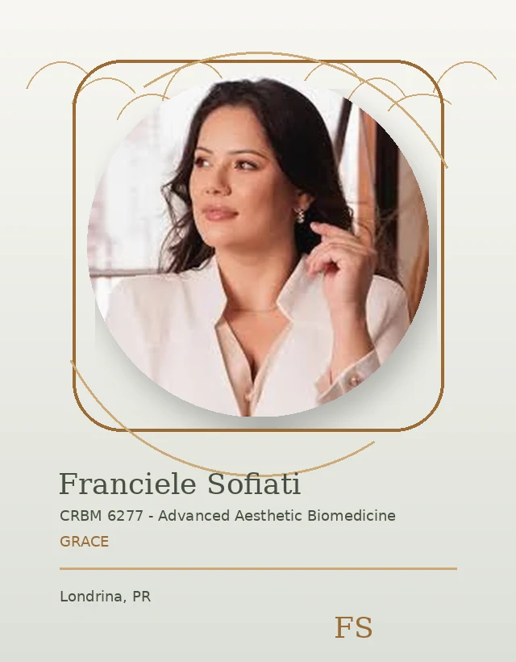
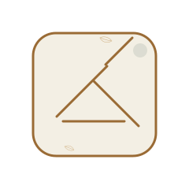
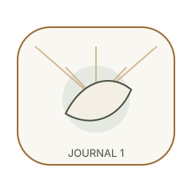

Clarity
Useful route.
Grace / Feedback Hero
Feedback should be treated with consent, privacy, and realistic context.

Grace / Consultation CTA
A consultation gives your questions context.
Grace / Consent First
Feedback should only be shared with appropriate permission.

Grace / No Guarantees
Feedback does not guarantee the same experience or outcome.
Grace / Experience Themes
Useful feedback themes include clarity, comfort, guidance, and trust.
Useful route.
Respect limits.
Useful route.
Clear explanations.

Grace / Privacy Note
Personal details and feedback must be handled carefully.
Grace / Trust Break
Responsibility matters in every part of the experience.

Grace / Results Guidance
Understand results responsibly before making decisions.
